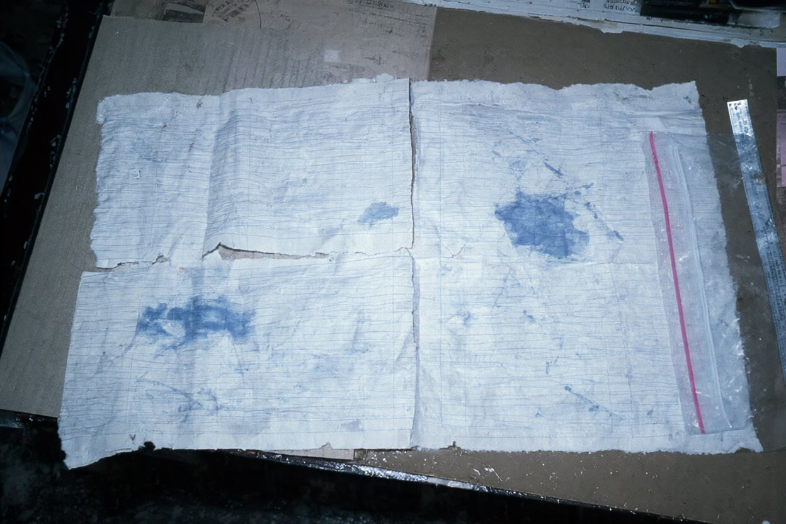

Справа № 98/117. Присутні: аварійний комісар бюро (А. к. гр. № 2); слідчий Очаківського РВ УМВС капітан міліції Дьомін О. В., який пред'явив речі й був присутній під час огляду. Речі з упаковки виймав слідчий. Огляд проведено на столі в кабінеті слідчого при електричному освітленні, без вилучення.
Оглянуто:

Оригінали аркушів залишено в Очаківському РВ (слідчий Дьомін О. В.). Копій не знімали — папір мокрий. Розшифровку записів комісар зробив з аркушів на місці, рядок за рядком, у присутності слідчого; розшифровка — на наступній сторінці.
Записи передано так, як написано, з усіма скороченнями. Позначки бюро: [розмито] — чорнило розпливлося, знак не читається; [нерозб.] — слово є, але прочитати не вдалося. Порядок рядків — як на сторінці.
| Час | Запис | Почерк |
|---|---|---|
| Стор. 41 | ||
| 20:00 | Вахту прийняв. К 030 ГК, 10 уз. ПдЗ 5, мряка сл., вид. 6–7'. | почерк 1 (рівний, з нахилом вправо) |
| 21:00 | φ 45°5[розмито] λ 30°5[розмито] GPS. Без змін. | почерк 1 |
| 22:00 | φ 46°00,[розмито] λ 30°58,[розмито] GPS. Обхід зроблено, зауважень [нерозб.] | почерк 1 |
| 23:00 | [розмито суцільно] | почерк 1 |
| 24:00 | Вахту здав 2/П. С/П [нерозб.] | почерк 1, підпис-закарлючка |
| 00:00 | 00:00 вахту прийняв. К 030 ГК, 10 уз. ПдЗ 5–6, мряка, видим. ~6'. Рульовий Пастух, ручне. | почерк 2 (дрібний, цифри чіткі) |
| 00:44 | 00:44 відкр. Мк Вовча к. Пр Б 10с, П 045, Д≈10,5'. | почерк 2 |
| 01:00 | 01:00 φ 46°[розмито] λ 31°[розмито] GPS | почерк 2 |
| 01:1? | 01:1[розмито] Мк В.к. — пост. тьм., не відп. хар-ці. Доп. КМ | почерк 2; друга цифра хвилин під плямою |
| 01:15 | 01:15 КМ на містку | почерк 2 |
| 01:16 | 01:16 КМ — порт УКХ | почерк 2; нижче до кінця сторінки — пляма, рядків не видно |
| Стор. 42 | ||
| 01:31 | 01:31 Мк В.к. — Пр Б 10с, хар-ка відн. | почерк 2 |
| 01:33 | 01:33 порт: маяк у нормі. КМ прийняв | почерк 2 |
| 01:35 | 01:35 [нерозб.] КМ — мене до С/П, якір [розмито] | почерк 2 |
| 01:44 | 01:44 на містку. К 105! Доп. КМ — банка [нерозб.] | почерк 2; «105» підкреслено двічі |
| 01:5? | 01:5[розмито суцільно] | почерк 2; далі рядок під плямою, нижче чисто |
Скорочення (пояснення комісара, у записах їх немає):
Примітка бюро: аркуші вирвано з журналу — лінія відриву нерівна; оригінали в Очаківському РВ. Чий почерк 1 і чий почерк 2 — за аркушами не встановлювали.